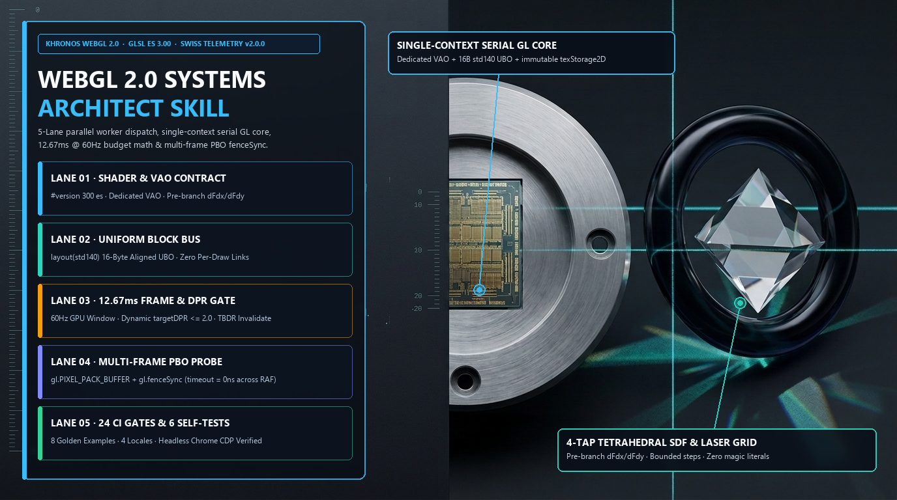
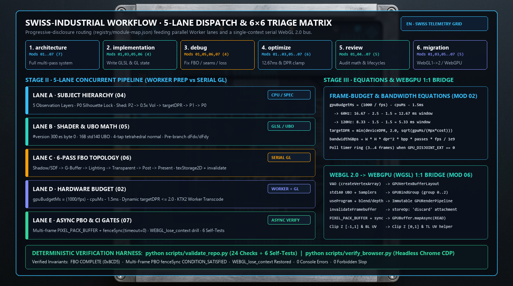
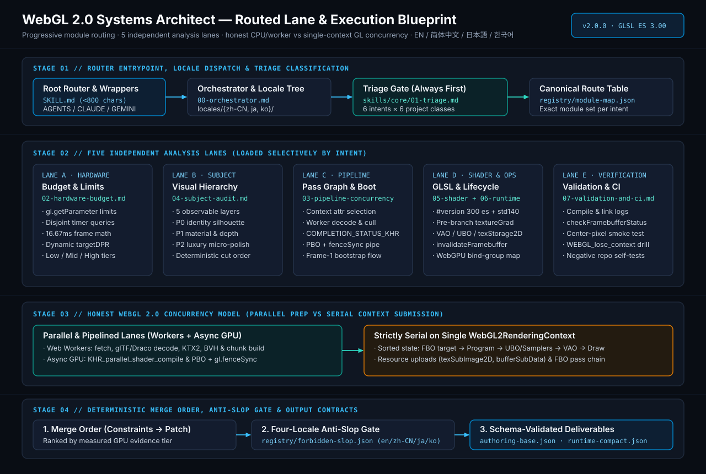
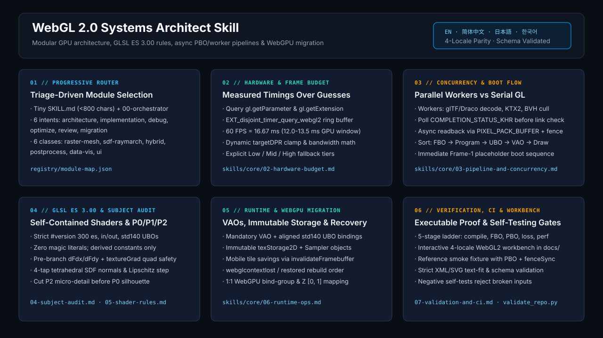

WebGL 2.0 Systems Architect Skill
A modular, self-contained GPU systems engineering skill and interactive workbench for building, auditing, debugging, optimizing, and migrating WebGL 2.0 renderers to WebGPU with measured frame-budget math and zero-slop contracts.

Interactive WebGL 2.0 Systems Workbench
Route intents to exact module sets, synthesize schema-valid JSON contracts, compute mobile DPR/bandwidth budgets, and inspect a live 2-pass FBO + multi-frame PBO fenceSync WebGL 2.0 pipeline.
1. Intent & Project Class Triage Router
7 / 7 modules loaded2. Frame Budget, DPR Clamp & Bandwidth Calculator
WITHIN BUDGET3. Live WebGL 2.0 Multi-Pass FBO, Disjoint Timer Ring & Multi-Frame PBO Probe
WEBGL2 + FBO READYQuerying WebGL 2.0 hardware limits...
Locale-Specific Workflow Studio & Engineering Blueprints
Each language features its own distinct visual design plate, interactive workflow simulator, and vector architecture diagrams.
AI Studio Hardware & Workflow Plate (PNG)
1376 × 768 STUDIO PLATE
Routed 5-Lane Execution Blueprint (SVG)

6-Intent Decision Matrix & Verification Gates (SVG)

Seven Focused Core Modules
Loaded selectively via progressive disclosure so small tasks stay fast and full architectures stay rigorous.
WebGL 2.0 to WebGPU (WGSL) 1:1 Migration Matrix
Structure WebGL 2.0 state today so dual-backend WebGPU adoption requires zero CPU uniform buffer repacking.
| WebGL 2.0 Construct | WebGPU / WGSL Equivalent | Dual-Backend Engineering Rule |
|---|